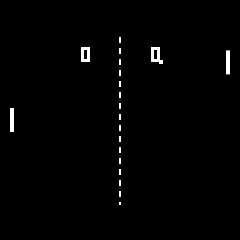
LES RAQUETES1972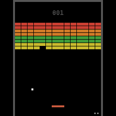
EL TRENCAMAONS1976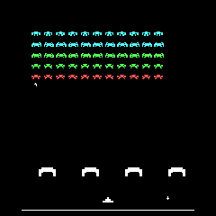
ELS INVASORS1978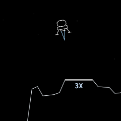
L'ALLUNATGE1979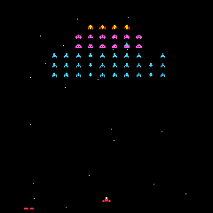
L'ESQUADRA1979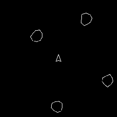
ROQUES DE L'ESPAI1979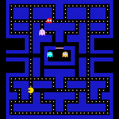
COMECOCOS1980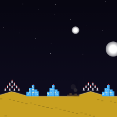
ELS MÍSSILS1980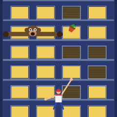
L'ESCALADOR1980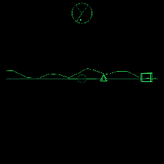
ELS TANCS1980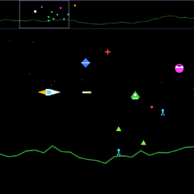
L'ESCORTA1980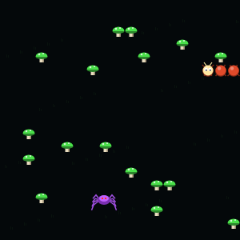
EL CENTPEUS1981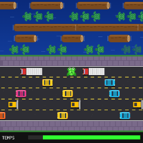
LA GRANOTA1981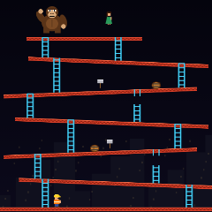
EL GORIL·LA1981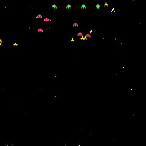
L'EIXAM1981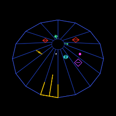
EL TÚNEL1981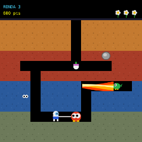
L'EXCAVADOR1982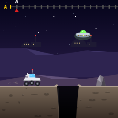
EL TOTTERRENY1982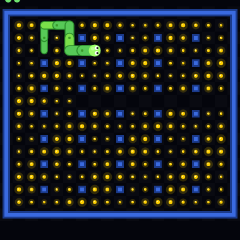
EL CUC1982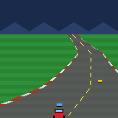
LA CURSA1982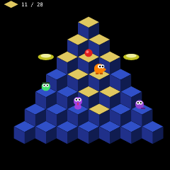
LA PIRÀMIDE1982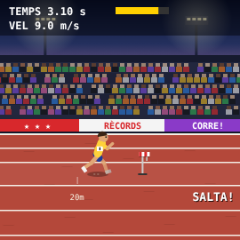
L'ATLETISME1983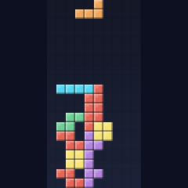
ELS BLOCS1984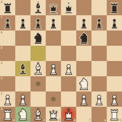
ELS ESCACS1475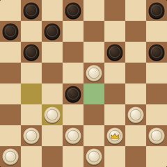
LES DAMES1547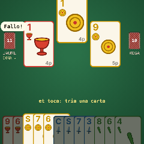
LA BOTIFARRAS. XIX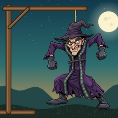
EL PENJAT1894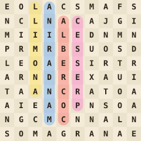
LA SOPA DE LLETRES1968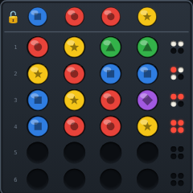
LA CAIXA FORTA1970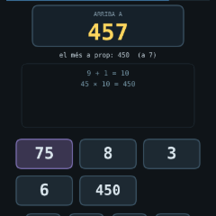
XIFRES1972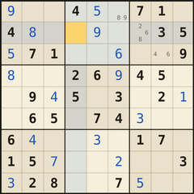
ELS NOU QUADRES1979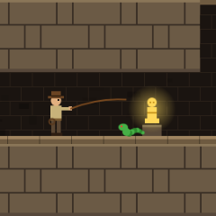
EL TEMPLE1989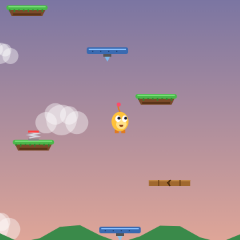
AMUNT2009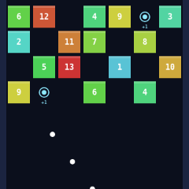
BOLES2016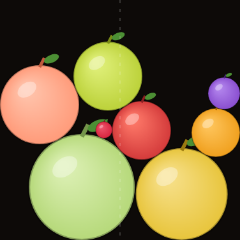
SÍNDRIA2021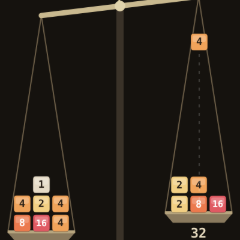
BALANÇA2026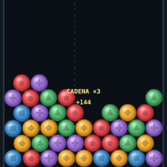
RAM2026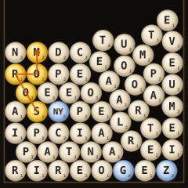
GARBUIX2026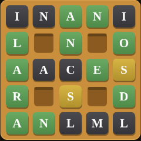
LA GOFRA2026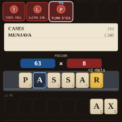
LA IMPREMTA2026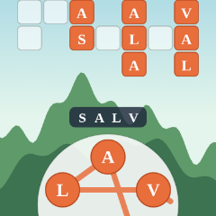
LA ROTLLANA2026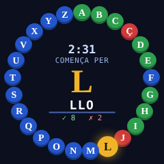
L'ABECEDARI2026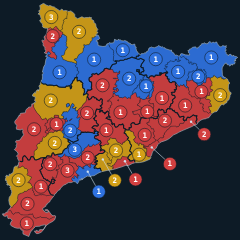
LA CONQUESTA2026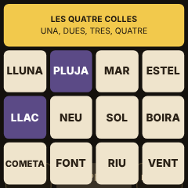
LES QUATRE COLLES2026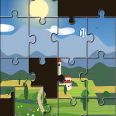
EL TRENCACLOSQUES2026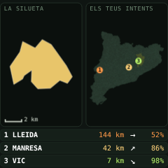
EL POBLE DEL DIA2026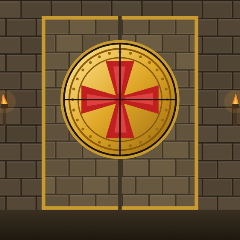
EL TRESOR DELS TEMPLERS2026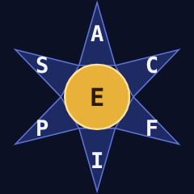
L'ESTEL2026